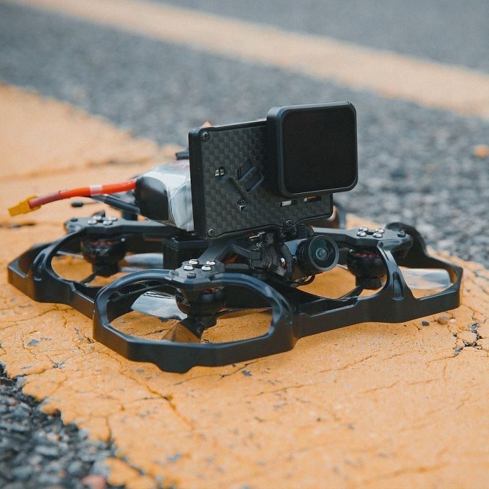

iFlight ProTek25

iFlight ProTek25 to dron stworzony z myślą o miłośnikach lotów FPV (First Person View) i wymagających użytkownikach. Poznaj jego wyjątkowe cechy:
- Szybki i zwrotny: ProTek25 oferuje dynamiczny i zwrotny lot, co pozwala na imponujące manewry w powietrzu.
- Wysoka jakość obrazu: Dron jest wyposażony w kamerę, która umożliwia nagrywanie wideo i oglądanie obrazu w czasie rzeczywistym w doskonałej jakości.
- Odpowiedni dla FPV: ProTek25 jest gotowy do lotów w trybie FPV i obsługuje gogle FPV.